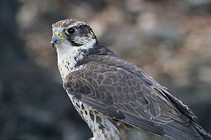

| Klasse | Vögel (Aves) |
|---|---|
| Ordnung | Falkenartige (Falconiformes) |
| Familie | Falkenartige (Falconidae) |
| Unterfamilie | Eigentliche Falken (Falconinae) |
| Gattung | Falken |
| Wissenschaftlicher Name | Falco |
Die Falken bilden eine verhältnismäßig einheitliche Gruppe. Zu ihren Merkmalen zählt der hakig nach unten gebogene Oberschnabel, an dessen vorderem Teil sie eine Zacke tragen, den sogenannten Falkenzahn. Diese Ausformung unterstützt den Biss in den Nacken beziehungsweise in den Hinterschädel des Beutetiers, durch den dieses getötet wird.
Die Augen sind relativ groß, die Iris ist meist dunkel. Wie bei den meisten Greifvögeln ist die Befiederung der Unterschenkel zu sogenannten „Hosen“ verlängert. Eine schwache Befiederung zieht sich über das Fersengelenk hinweg.
Falken haben stets 15 Halswirbel. Ein Turmfalke beispielsweise, der von einer Warte aus nach Beute ausspäht, kann seine Halswirbelsäule um 180° drehen. Schon aufgrund seiner Augenstellung beträgt sein Blickfeld 220°, ohne dass er den Hals auch nur drehen muss.
Die Gattung ist fast weltweit verbreitet und umfasst 39 Arten. In Mitteleuropa kommen mit Turmfalke, Rotfußfalke, Baumfalke, Wanderfalke und Sakerfalke fünf Falkenarten als Brutvögel vor. Der Rötelfalke brütete bis vor wenigen Jahren noch in der Steiermark, kann aber mittlerweile nicht mehr als mitteleuropäischer Brutvogel angesehen werden. Als Wintergast aus dem Norden kann in Mitteleuropa nicht selten der Merlin beobachtet werden.
Unter den Falken befinden sich obligatorische Zugvögel, aber auch Standvögel. Zu den Langstreckenziehern zählt der Baumfalke, der von seinem Brutareal bis in die Kapprovinz Südafrikas zieht. Der Turmfalke dagegen ist ein Kurzstreckenzieher. Falken sind Breitfrontzieher, die in breiter Front von Gibraltar bis Arabien nach Afrika ziehen. Im aktiven Ruderflug überwinden sie auch größere Wasserflächen.
Falken bauen keine Nester. Die Brut findet in Nestern anderer Vogelarten oder in einfachen Mulden an Felswänden, Gebäuden oder auf Bäumen statt. Das unterscheidet sie von anderen Greifvögeln.
Im Gegensatz zu Adlern oder Bussarden ist ihre Anatomie auf den aktiven Flug hin ausgerichtet und nicht optimal zum Nutzen von Aufwinden geeignet. Dies führt dazu, dass die meisten Falkenarten ihre Beute im aktiven Flug suchen oder von einem Ansitz aus nach Nahrung Ausschau halten. Wird diese entdeckt, wird sie auch über weite Strecken hin angeflogen und verfolgt. Obwohl die Jagdtechnik des „Rüttelns“ als typisch für Falken angesehen wird, jagen nur wenige Arten auf diese energieaufwendige Weise. In Mitteleuropa ist besonders der Turmfalke für häufiges Rütteln bekannt (daher sein volkstümlicher Name Rüttelfalk). Gelegentlich können auch Rotfußfalken beim Rüttelflug beobachtet werden. Besonders häufig ist das Rütteln in Gelände mit wenigen oder fehlenden erhöhten Sitzgelegenheiten.
Zur natürlichen Beute von Falken gehören je nach Größe und besonderer Anpassung der Art kleine Säugetiere, Vögel, Reptilien, Amphibien und größere Insekten. Die Füße dienen, anders als bei Habichten, Adlern und Weihen, nur zum Fang und Halten der Beute. Bei Wanderfalken können nach einem Sturzflug Vögel jedoch so hart mit Füßen und Krallen getroffen werden, dass sie bereits durch die Wucht des Aufpralls getötet werden.
Bei vielen Völkern spielen Falken eine Rolle in der Mythologie. In der ägyptischen Mythologie existieren mehrere falkengestaltige Gottheiten wie etwa Horus (Himmel), Re (Sonne) und Chons (Mond). In diesem Zusammenhang kommt dem Falken auch als Symbol des Pharaos eine besondere Bedeutung zu.